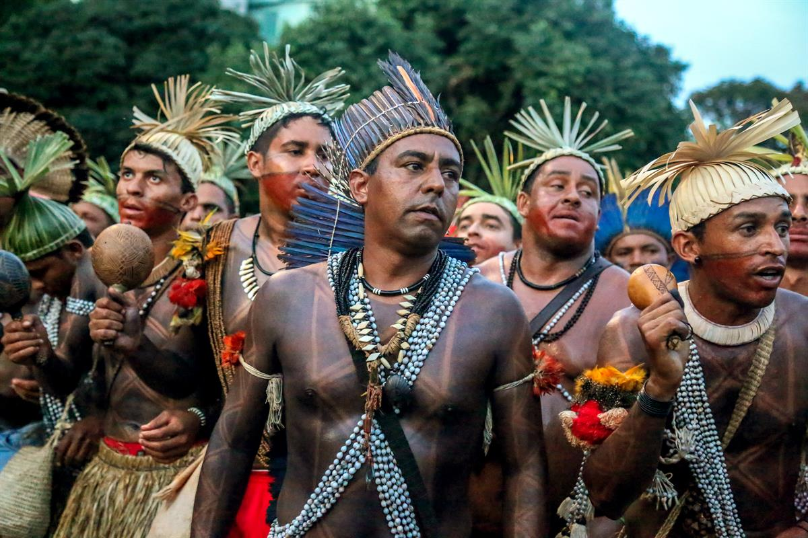
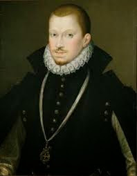
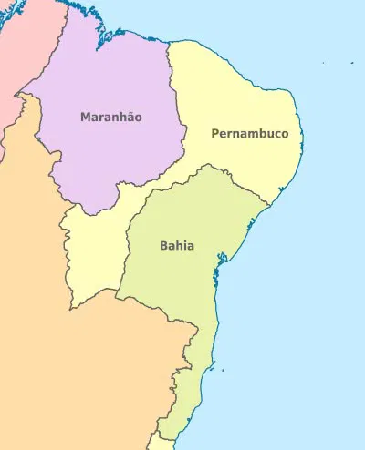
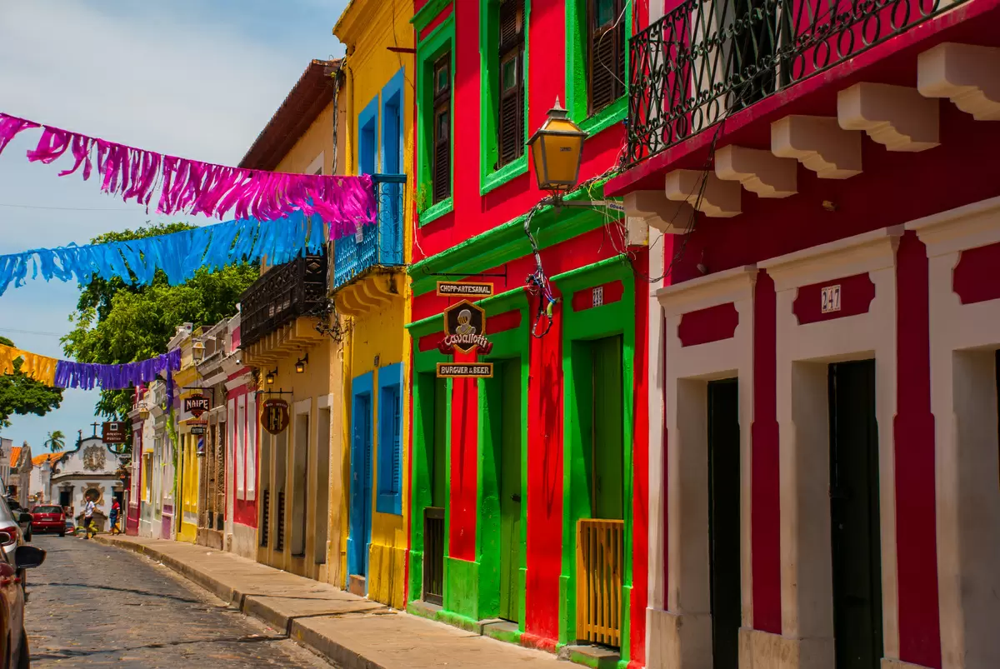
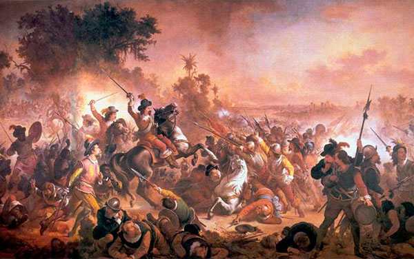
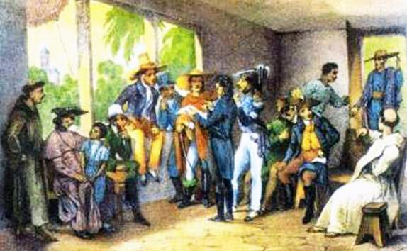
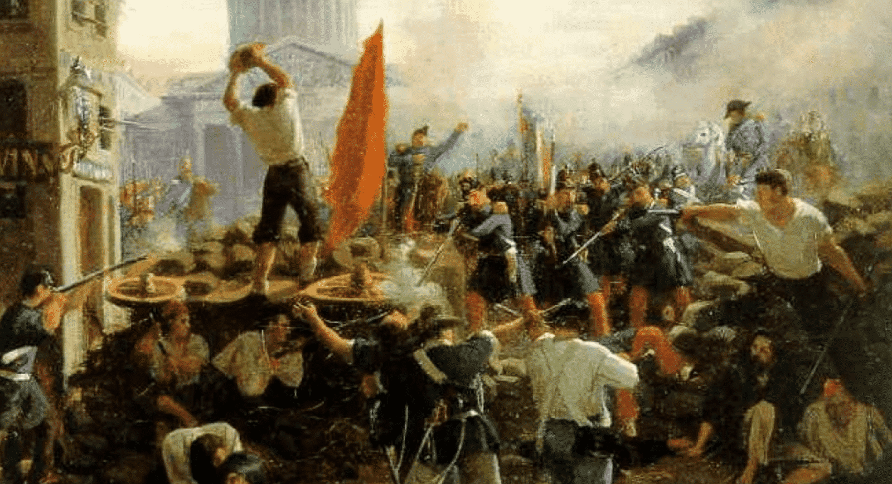

| Início | * | Informações gerais | * | Um pouco da história |
O território onde hoje é o estado de Pernambuco era povoado por diversas tribos indígenas como caetés, cariris e tabajaras, dentre outras etnias.
Através do sistema de Capitanias Hereditárias, Duarte Coelho tomou posse da Capitania de Pernambuco, chamada inicialmente de Capitania Nova Lusitânia. Em 1535 foi fundado o povoado de Olinda e em 1537, esta passou a ser Vila.
A Capitania de Pernambuco compreendia um território bem maior que o atual. Incorporava o que chamamos hoje de estados da Paraíba, Rio Grande do Norte, Alagoas, Ceará e parte da Bahia.
Já no final do século 16, a Capitania de Pernambuco se tornara uma das mais ricas da colônia. Este fato atraiu a atenção de ingleses, holandeses e franceses que organizaram expedições para tomar a então capital, Olinda.
A invasão holandesa tem início na Bahia em 1624 e foram expulsos da capital graças à ação de uma armada luso-espanhola um ano depois. No entanto, voltariam à carga para conquistar um pedaço do comércio açucareiro invadindo Recife e Olinda, em 1630. Apesar dos ferozes combates – Olinda foi incendiada – os holandeses se estabeleceram naquelas terras até a eclosão da Insurreição Pernambucana em 1645.
Muitos historiadores apontam esta guerra como a primeira rebelião de caráter nativista do Brasil. Afinal, o conflito colocou em lados contrários a elite branca já nascida no Brasil e os portugueses recém-chegados da metrópole.
A Confederação dos Cariris ou Guerra do Bárbaros foi uma série de batalhas ocorridas entre os anos de 1683 a 1713. Após a expulsão dos holandeses, os colonizadores portugueses continuaram se expandir em direção ao sertão nordestino. Buscavam aumentar as lavouras de açúcar e algodão, além do pasto para o gado.
Na primeira metade do século 19, vários territórios do continente americano se rebelam contra a dominação europeia. Desta maneira, inspirados pelas ideias iluministas e pela Independência dos Estados Unidos, um grupo de insurgentes planeja a emancipação da agora província de Pernambuco.
A Confederação do Equador foi uma revolta de caráter separatista e republicano ocorrida em Pernambuco em 1824. Ela deve ser entendida dentro do contexto do Primeiro Reinado, quando governava Dom Pedro I.
A Revolução Praieira foi um movimento de caráter liberal. Defendia a liberdade de imprensa, a nacionalização do comércio varejista e o fim do Poder Moderador. Os protestos começaram na sede do jornal Diário Novo, localizada na Rua da Praia, e seus integrantes eram conhecidos como "praieiros". O combate começou em Recife, mas logo se espalhou pela Zona da Mata pernambucana.
